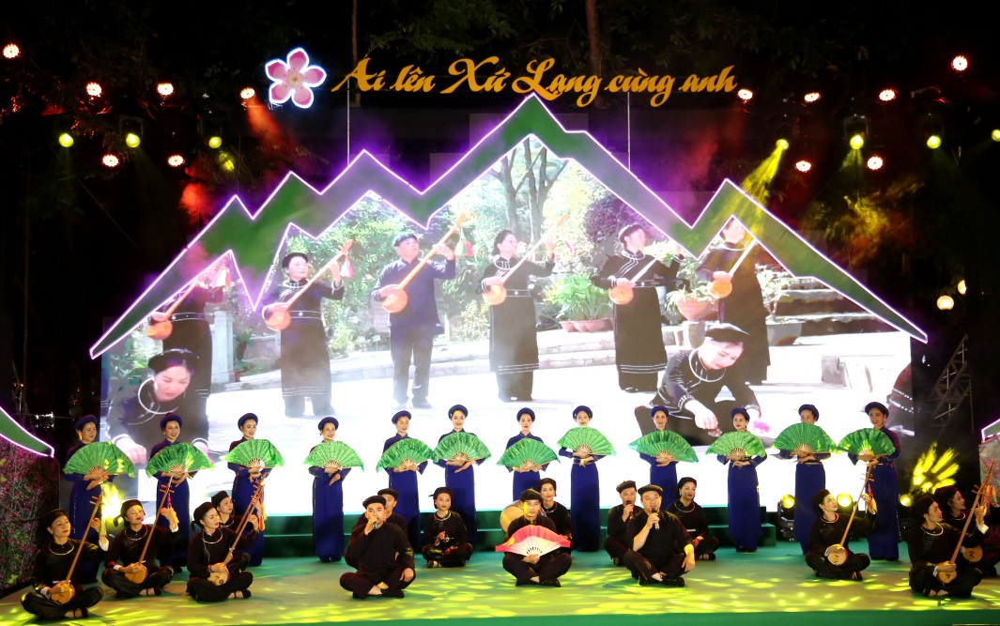
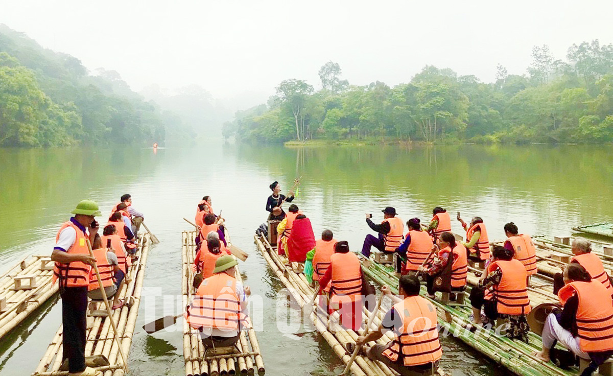

Then & Xứ Lạng: Hành Trình 11 Huyện Thị Biên Cương
Trải dài từ lòng chảo Thất Khê, thung lũng Bắc Sơn, Bình Gia đến dải đất biên giới Cao Lộc, Lộc Bình, nghệ thuật Hát Then – Đàn Tính là sợi dây văn hóa kết nối cộng đồng Tày - Nùng trên khắp 11 huyện thị tỉnh Lạng Sơn.
Nét Đặc Trưng Then Trên 11 Vùng Đất Lạng Sơn
Huyện Tràng Định
Nổi tiếng với các làn điệu "Suôi lừa", "Đàn khách", "Khẩu tu vua" và trường ca "Khảm Hải" vượt biển hào hùng.
Huyện Bình Gia
Cội nguồn làn điệu "Khao sluông" mừng bản làng, điệu "Bến thuông" và là quê hương của nhiều nghệ nhân ưu tú.
Huyện Bắc Sơn
Phong trào Then lời mới phát triển mạnh mẽ, giai điệu mượt mà hòa cùng âm hưởng núi rừng di tích lịch sử.
Huyện Văn Quan
Nơi lưu giữ làng nghề gia công cây đàn Tính gỗ xoan, quả bầu khô truyền thống cùng điệu "Pây tàng" dồn dập.
Huyện Văn Lãng
Phong trào sinh hoạt câu lạc bộ Then sôi nổi nhất tỉnh với sự tham gia nhiệt tình của thanh thiếu niên vùng cao.
Huyện Cao Lộc
Đặc trưng Then Nùng với nhịp điệu nhanh, khỏe khoắn, phong cách biểu diễn dứt khoát giàu sức sống.
Huyện Lộc Bình
Nơi làn điệu Then quyện trong không gian sương mờ núi cao, ngợi ca thiên nhiên và tình yêu đôi lứa.
Huyện Chi Lăng
Sự giao thoa độc đáo giữa thơ ca dân gian Tày - Nùng và tinh thần tự hào quê hương Xứ Lạng.
Huyện Đình Lập
Giao lưu làn điệu Then Tày với nghệ thuật dân gian truyền thống của các dân tộc anh em lân cận.
Huyện Hữu Lũng
Nơi tổ chức nhiều ngày hội giao lưu dân ca, đưa làn điệu Then tiếp cận với du khách thập phương.
Thành phố Lạng Sơn
Trọng điểm sân khấu hóa nghệ thuật Then, nơi quy tụ các liên hoan Hát Then – Đàn Tính cấp tỉnh và quốc gia.
Then Trong Không Gian Lễ Hội & Du Lịch Xứ Lạng

LỄ HỘI MÙA XUÂNTrẩy Hội Mùa Xuân & Tiếng Đàn Tính Rộn Rã Bản Làng
Mỗi độ xuân về trên dải đất Lạng Sơn, khắp các bản làng Tày - Nùng lại rộn ràng tiếng đàn Tính và chùm xóc nhạc. Không còn gò bó trong không gian nhỏ, Then hòa vào các hội Lồng Lồng (Hội xuống đồng), hội đình, hội chùa, trở thành tâm điểm kết nối tình đoàn kết xóm làng và thu hút hàng ngàn du khách trải nghiệm.

DU LỊCH DI SẢNTrải Nghiệm Hát Then Tại Các Điểm Du Lịch Cộng Đồng
Gắn liền với định hướng phát triển Công viên Địa chất Lạng Sơn và du lịch sinh thái Mẫu Sơn, Bắc Sơn, các đội văn nghệ Hát Then đã trở thành những "sứ giả văn hóa". Du khách được lắng nghe nghệ nhân biểu diễn trực tiếp dưới mái nhà sàn truyền thống, thưởng thức ẩm thực vùng cao và giao lưu tiếng đàn.
Trao Truyền Di Sản Cho Thế Hệ Tương Lai
Đề án "Bảo tồn và phát huy giá trị di sản Hát Then – Đàn Tính tỉnh Lạng Sơn" do Sở Văn hóa, Thể thao và Du lịch triển khai đã phủ sóng khắp 11 huyện thị, đưa Then vào trường học và thành lập mạng lưới câu lạc bộ thế hệ trẻ.
Gieo Mầm Then Trong Học Đường
Đưa tiếng đàn Tính vào tiết học ngoại khóa tại các trường THCS, THPT. Hơn 1.400 học sinh tại Bắc Sơn, Văn Quan, Tràng Định được chính các nghệ nhân ưu tú trực tiếp truyền dạy.
Gia Công Đàn Tính Thủ Công
Mở rộng các xưởng đẽo cần đàn gỗ xoan và chọn bầu khô tại huyện Văn Quan. Bảo tồn quy trình chế tác thủ công khắt khe, tạo sinh kế bền vững cho các nghệ nhân làm đàn.
Số Hóa & Triển Lãm Số
Sưu tầm, ký âm và ghi hình tư liệu của 375+ nghệ nhân trên toàn tỉnh. Xây dựng hệ thống lưu trữ điện tử ThenHub giúp thế hệ trẻ dễ dàng tiếp cận mọi lúc mọi nơi.